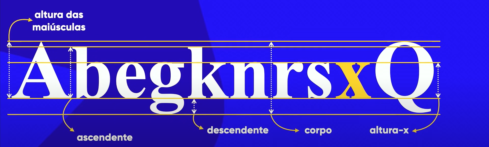
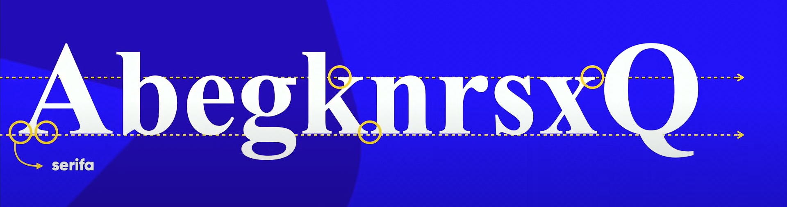
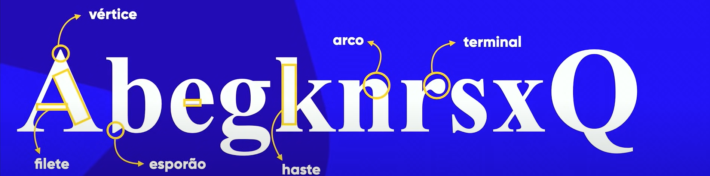
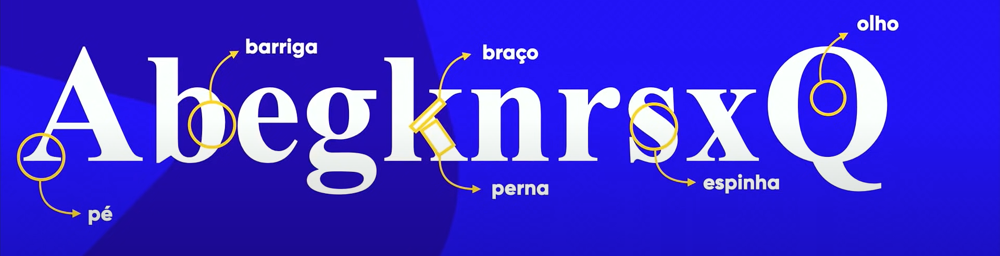
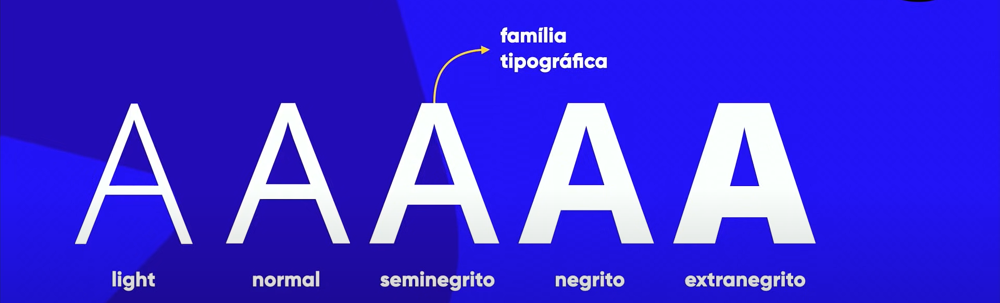
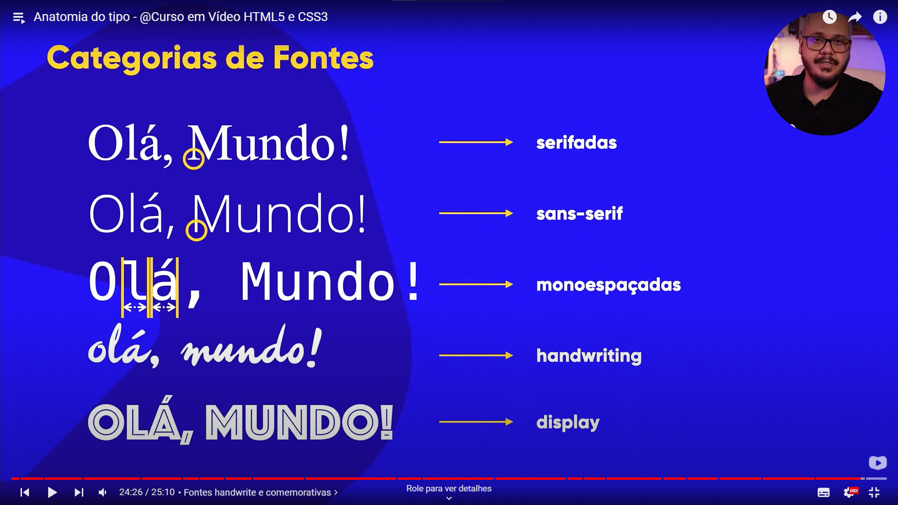

Anatomia Das Fontes
Anatomicos métricos
A letra 'X' é o ponto de partida para a construção de todas as fontes (em mínusculo), ou seja, ela é a referencia para as medidas
Na imagem abaixo temos um exemplo de todos os itens métricos :

Anatomicos Geometricos
Serifa é um tracinho que existe ao final de algumas letras, MAS NEM TODAS AS FONTES POSSUEM SERIFA
Ela serve basicamente para guiar o leitor, criando uma linha no topo no chão das letras, EX:
,
das anatomias geometricas, o serifa é o mais importante, mas também há varias outras como na imagem:

Anatomia Humanizada
Na anatomia Humanizada, damos algumas caracteristicas humanas para a fonte, como alguns exemplos na imagem:

Familia tipografica
São as mesmas letras com diferentes tipos de bordas, Ex:
Categorias de fontes
São as Categorias que damos a todas as fontes, Serifadas = com serifa, Sans-serif = sem serifa, Monoespaçadas = TODOS os espaçamentos iguais independete da letra, Handwrting = 'algo mais manual', e Display = algo mais comemorativo EX:
